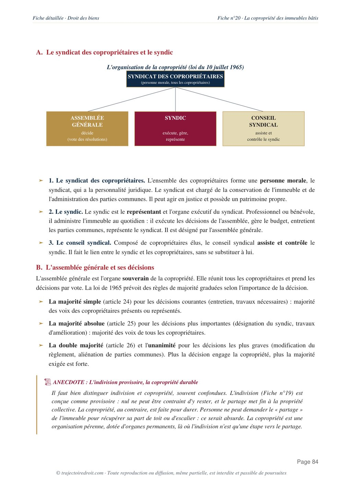

L'arrêt du 19 novembre 1986 sur les troubles de voisinage, expliqué simplement
L'arrêt du 19 novembre 1986, rendu par la deuxième chambre civile de la Cour de cassation, pose le principe qui gouverne aujourd'hui encore tout le contentieux du bruit, des odeurs et des nuisances entre voisins. Cette fiche reprend les faits, la solution exacte et une erreur à ne pas commettre. La cassation profite ici au boulanger poursuivi, et non aux voisins qui se plaignaient de lui.

L'essentiel en une phrase
La deuxième chambre civile de la Cour de cassation, le 19 novembre 1986 (pourvoi n° 84-16.379), pose le principe selon lequel nul ne doit causer à autrui un trouble anormal de voisinage. Ce principe autonome, détaché de toute faute, fonde depuis lors la responsabilité de tout propriétaire, locataire ou occupant dont l'activité dépasse les inconvénients normaux que chacun doit supporter de ses voisins.
À l'origine, ce principe naît d'un simple visa de la Cour de cassation, c'est-à-dire une référence à une règle qu'elle affirme exister sans la tirer d'un article précis, avant qu'elle s'en serve pour censurer les juges du fond qui n'en tirent pas les bonnes conséquences. Depuis la loi du 15 avril 2024, ce principe prétorien est devenu un texte à part entière, l'article 1253 du Code civil.
L'arrêt pose le principe d'une responsabilité sans faute pour trouble anormal de voisinage, mais il casse en réalité l'arrêt d'appel au bénéfice de l'exploitant et non des voisins. La cour d'appel avait elle-même constaté que le bruit était doux et régulier, donc que le trouble n'était pas anormal, et elle ne pouvait pas ordonner l'isolation du compresseur sur un autre motif. Retiens aussi que ce principe est désormais inscrit à l'article 1253 du Code civil depuis 2024.
Les époux X, voisins d'une boulangerie exploitée par M. Y, se plaignent du bruit d'un compresseur et des odeurs de l'activité.
La cour d'appel de Nancy ordonne l'isolation du compresseur, tout en constatant que son bruit est doux et régulier.
La Cour de cassation pose le principe du trouble anormal de voisinage et casse l'arrêt de Nancy, qui n'en a pas tiré les conséquences.
Le principe s'étend aux voisins occasionnels, aux locataires, et se retrouve codifié à l'article 1253 du Code civil en 2024.

Fiche complète
Droit des biens L2
Les faits, une boulangerie et deux nuisances
Les époux X habitent un immeuble contigu à une boulangerie exploitée par M. Y. Ils se plaignent de deux sources de nuisance. D'abord, un compresseur installé par le boulanger dans sa cave, dont le bruit se propage jusqu'à leur logement. Ensuite, une cheminée de l'établissement, jugée trop basse à leur goût. Les époux X assignent M. Y en réparation du dommage que ces troubles leur causeraient.
La procédure et le pourvoi
La cour d'appel de Nancy, par un arrêt du 25 mai 1984, fait droit à une partie de leur demande. Sur le compresseur, elle constate pourtant elle-même que son bruit est doux et régulier. Malgré ce constat, elle ordonne son isolation et la pose d'un capot de protection, en se fondant sur un argument étranger au trouble lui-même, à savoir que M. Y avait déjà fait poser un tel dispositif sur un autre compresseur. Sur la cheminée, elle ordonne sa surélévation, en affirmant que les parties s'étaient mises d'accord sur ce point dans leurs courriers, sans avoir recueilli leurs explications sur cette prétendue entente.
M. Y se pourvoit en cassation contre ces deux mesures. Sur le compresseur, il reproche à la cour d'appel de ne pas avoir tiré les conséquences de son propre constat d'un bruit doux et régulier. Sur la cheminée, il reproche au juge d'avoir statué sans lui donner la parole sur l'accord qu'on lui prêtait, en violation du principe du contradictoire.
Le problème de droit
Le pourvoi pose en réalité deux questions distinctes, mais celle qui intéresse le droit des biens est la première. Un juge peut-il ordonner une mesure de réparation pour trouble de voisinage, comme l'isolation d'une installation bruyante, sans avoir lui-même caractérisé que ce trouble dépasse les inconvénients normaux du voisinage ? Autrement dit, l'anormalité du trouble doit-elle être constatée pour de bon, ou le juge peut-il s'appuyer sur un motif qui n'a rien à voir avec l'intensité réelle de la nuisance ?
La solution de la Cour de cassation
La Cour de cassation censure la cour d'appel de Nancy, et elle le fait par un visa devenu la référence de toute la matière. Apprends-le mot pour mot, il ouvre presque toutes les copies sur les troubles de voisinage.
Le visa de principe
« Vu le principe suivant lequel nul ne doit causer à autrui un trouble anormal de voisinage. »Cass. 2e civ., 19 novembre 1986, n° 84-16.379
La Cour de cassation constate ensuite que la cour d'appel, ayant elle-même relevé que le bruit du compresseur était doux et régulier, n'a pas tiré les conséquences de ses propres constatations en ordonnant tout de même son isolation. Elle casse donc l'arrêt de Nancy sur ce point, ainsi que sur la cheminée pour violation du principe du contradictoire, et renvoie l'affaire devant la cour d'appel de Besançon.
Le sens du raisonnement, un piège à éviter
Cet arrêt tient un double discours, ce qui explique toute sa difficulté. D'un côté, la Cour de cassation affirme pour la première fois avec cette force un principe autonome. La responsabilité pour trouble de voisinage repose sur le seul dépassement du seuil que le voisinage impose à chacun de tolérer, qu'il s'agisse d'un bruit, d'une odeur ou d'un passage, sans qu'aucune faute soit exigée de son auteur. Peu importe que l'auteur du trouble respecte la réglementation ou exerce son activité dans les règles. S'il cause un trouble anormal, il doit le réparer.
D'un autre côté, beaucoup d'étudiants ratent ce point. La solution concrète de cet arrêt profite en réalité à M. Y, le boulanger, et non aux époux X. La raison tient à la logique même du principe qu'elle vient de poser. Si le trouble doit être anormal pour engager la responsabilité de son auteur, il faut aussi que les juges du fond le constatent réellement. Or la cour d'appel de Nancy avait elle-même écrit que le bruit du compresseur était doux et régulier, ce qui revient à dire qu'il n'excédait pas les inconvénients normaux du voisinage. Elle ne pouvait donc pas, dans la même décision, ordonner l'isolation de cet appareil en s'appuyant sur un fait sans rapport avec l'intensité du bruit, à savoir ce que M. Y avait fait ailleurs pour un autre compresseur. L'arrêt de 1986 pose donc autant un principe de fond qu'une exigence de méthode pour les juges du fond, à savoir caractériser l'anormalité avant de sanctionner, et ne jamais s'en tenir à un motif étranger au trouble lui-même.
Tu révises ton droit des biens ?
Reçois gratuitement mon guide « Réviser le droit sans s'épuiser ». La méthode que mes élèves utilisent pour retenir les grands arrêts sans les bachoter la veille.
Pourquoi cet arrêt a-t-il construit tout un régime ?
Ce principe a construit tout un régime parce que la Cour de cassation l'a repris et précisé arrêt après arrêt pendant près de quarante ans, sans qu'aucun texte de loi ne le porte au départ. Il est pourtant devenu l'un des régimes les plus appliqués du droit des biens.
Elle a d'abord confirmé son indépendance totale à l'égard de la faute. Le 21 janvier 2021 (pourvoi n° 19-22.863), la deuxième chambre civile rappelle que l'auteur du trouble en doit réparation indépendamment de toute faute de sa part. Elle a ensuite étendu le cercle des personnes concernées. Le 22 juin 2005 (pourvoi n° 03-20.068), à l'occasion de travaux de rénovation menés dans l'hôtel George V à Paris, la troisième chambre civile juge que les constructeurs intervenant sur un chantier peuvent eux aussi être poursuivis par les voisins sur le fondement des troubles anormaux de voisinage, en tant que voisins occasionnels le temps du chantier, alors même qu'ils n'ont, à la différence du propriétaire, aucun lien durable avec le fonds voisin.
Le régime a aussi développé un tempérament, la théorie de la pré-occupation, aussi appelée théorie de l'antériorité. Celui qui s'installe volontairement à proximité d'une activité déjà existante et conforme à la réglementation ne peut pas se plaindre des troubles qu'elle cause, tant qu'elle se poursuit dans les mêmes conditions. Autrement dit, celui qui vient s'installer à côté d'une nuisance ne peut pas ensuite en demander réparation. Le législateur a fini par reprendre l'ensemble de cette construction jurisprudentielle. La loi n° 2024-346 du 15 avril 2024 a inséré dans le Code civil un article 1253, qui reprend presque mot pour mot le principe de 1986, à savoir que le propriétaire, le locataire ou l'occupant d'un bien à l'origine d'un trouble excédant les inconvénients normaux de voisinage en est responsable de plein droit, tout en reprenant à son deuxième alinéa le tempérament de l'antériorité. La règle prétorienne est donc devenue la loi, dans une continuité presque parfaite.
Si tu veux revoir tout le programme de la matière, la propriété, la possession et les démembrements compris, ma fiche de droit des biens L2 reprend chaque notion et chaque grand arrêt à connaître, avec la méthode du cas pratique appliquée pas à pas. Sur un autre grand arrêt qui limite le droit de propriété, va voir ma fiche sur l'arrêt du 7 juin 1990 sur l'empiétement, qui pose une règle beaucoup plus stricte pour le voisin dont le terrain est empiété.
La critique doctrinale
La solution ne fait pas l'unanimité, même après quarante ans d'application. Le principal reproche porte sur le flou du critère de l'anormalité. La loi de 2024, comme la jurisprudence avant elle, laisse au juge du fond le soin d'apprécier souverainement, au cas par cas, la nature des lieux, l'intensité et la durée du trouble pour distinguer un inconvénient normal d'un trouble anormal. Cette souplesse permet de coller à chaque situation, mais elle rend le résultat difficile à prévoir avant qu'un juge ne tranche, ce qui nourrit un contentieux abondant.
La construction du régime a aussi suscité un débat sur son fondement. Puisque le principe ne repose ni sur la faute de l'article 1240 du Code civil ni sur l'intention de nuire propre à l'abus de droit, il a fallu justifier autrement cette responsabilité détachée de tout comportement fautif. Certains auteurs y voient une application de l'équité entre voisins. Celui qui profite d'une activité doit en assumer les inconvénients excessifs qu'elle cause à autrui. D'autres la rattachent à une idée de garantie, proche de l'égalité devant les charges qui pèsent sur le voisinage. Ce débat reste ouvert, mais il n'a jamais remis en cause le principe lui-même, seulement sa justification théorique.
À l'inverse, la solution est saluée pour son efficacité pratique. Elle dispense la victime d'un trouble de prouver une faute souvent impossible à établir, notamment quand l'exploitant respecte scrupuleusement la réglementation applicable à son activité. Sans ce principe autonome, un voisin qui subit un trouble réel et documenté resterait sans recours face à un exploitant en règle, ce qu'une bonne partie de la doctrine juge socialement inacceptable.
Comment utiliser cet arrêt dans une copie
Dans un cas pratique. Tu cites cet arrêt dès qu'un énoncé décrit une nuisance entre voisins, qu'il s'agisse d'un bruit, d'une odeur ou d'autre chose. Il faut d'abord vérifier si le trouble dépasse les inconvénients normaux du voisinage, en te fondant uniquement sur son intensité, jamais sur une faute chez son auteur. Regarde aussi si l'énoncé évoque une activité préexistante, pour envisager le tempérament de l'antériorité. Tu peux alors citer l'article 1253 du Code civil si les faits sont postérieurs au 15 avril 2024.
Dans une dissertation sur les limites du droit de propriété. Cet arrêt se compare utilement à l'arrêt Clément-Bayard du 3 août 1915, qui sanctionne au contraire l'abus du droit de propriété exercé dans la seule intention de nuire à un voisin. Les deux arrêts limitent la liberté de celui qui use de sa propriété face à un voisin, mais selon deux logiques opposées. Clément-Bayard exige une intention malveillante, un fait subjectif que le demandeur doit prouver. Le trouble anormal de voisinage ne demande qu'un dépassement objectif du seuil de tolérance, sans avoir à sonder les intentions de personne. Pour la méthode complète, regarde ma page sur la fiche d'arrêt et celle sur le raisonnement juridique étape par étape.
Les erreurs à éviter avec l'arrêt du 19 novembre 1986
- Croire que cet arrêt condamne le boulanger. La cassation intervient au bénéfice de M. Y, parce que la cour d'appel n'avait pas caractérisé l'anormalité du trouble malgré son propre constat d'un bruit doux et régulier.
- Confondre le trouble anormal de voisinage avec l'abus de droit. L'abus de droit suppose une intention de nuire. Le trouble anormal de voisinage exige seulement un dépassement objectif des inconvénients normaux, peu importe l'intention de son auteur.
- Oublier le tempérament de l'antériorité. Un voisin qui s'installe volontairement près d'une activité déjà existante et régulière ne peut pas se plaindre des troubles qu'elle cause, tant qu'elle continue dans les mêmes conditions.
- Ignorer la codification de 2024. Pour un cas pratique dont les faits sont récents, cite directement l'article 1253 du Code civil plutôt que le seul principe prétorien de 1986.
Questions fréquentes
Que dit l'arrêt du 19 novembre 1986 sur les troubles de voisinage ?
L'arrêt du 19 novembre 1986 est-il toujours d'actualité ?
Comment citer l'arrêt du 19 novembre 1986 en copie ?
Faut-il prouver une faute pour engager la responsabilité pour trouble de voisinage ?
Quelle différence entre le trouble anormal de voisinage et l'abus de droit de l'arrêt Clément-Bayard ?

Le droit des biens va bien au-delà des troubles de voisinage.
Ma fiche de droit des biens L2 reprend chaque grand arrêt et chaque notion, expliqués simplement et prêts à servir en commentaire comme en dissertation.
Voir la fiche de droit des biens L2